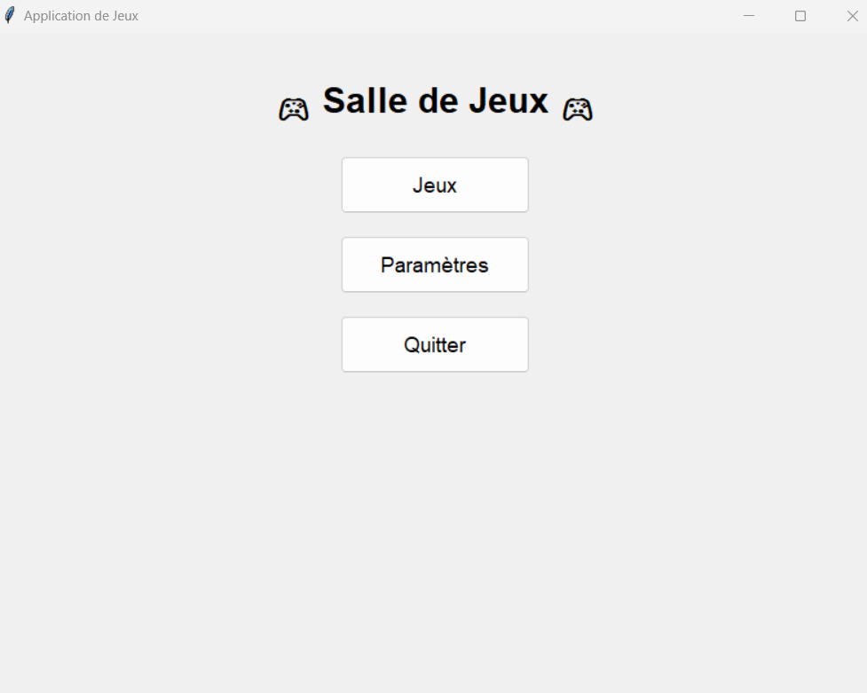

Site Web C2RB
1er février 2024
Site institutionnel développé avec WordPress
Création et développement du site web officiel pour le C2RB en utilisant WordPress comme CMS.
Le projet comprenait la personnalisation du thème, l'intégration de fonctionnalités spécifiques et l'optimisation des performances.
